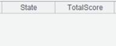
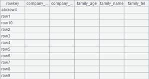
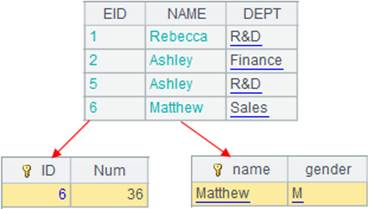
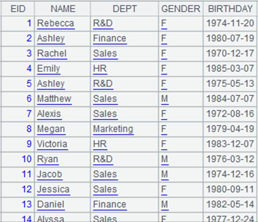
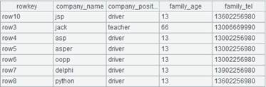

Description:
Find a record according to its primary key value.
Syntax:
A.find(k)
Note:
The function finds records from a record sequence/table sequence whose primary key values are k. Use the index table if there is one. When parameter A has a time key, among records that have same basic key values and where the time key value is not greater than the specified k value, find the record whose time key value is the largest. If there isn¡¯t time key value in the primary key, take the time calculated through now() function, which is the latest time.
Parameter:
|
A |
A record sequence/table sequence. |
|
k |
Primary key, which will be written as a sequence if it is a multi-field primary key. |
Option:
|
@b |
Use the binary search. A must be ordered by the primary key; otherwise, the result will be wrong. The index table will be ignored. |
|
@k |
Find multiple records; return members of A matching the sequence of key values specified by parameter k; by default, the function returns the first-found record whose primary key is k. |
Return value:
Records
Example:
|
|
A |
|
|
1 |
=demo.query("select * from EMPLOYEE") |
|
|
2 |
=A1.keys(NAME,DEPT) |
|
|
3 |
=A1.find(["Alexis","Sales"]) |
A sequence is used since the key contains two fields. |
|
4 |
=demo.query("select * from EMPLOYEE") |
This table sequence is ordered by the EID field. |
|
5 |
=A4.keys(EID) |
|
|
6 |
=A4.find@b(3) |
@b is used to enable the binary search in order to speed up the computation. |
|
7 |
=A4.find@k(2,15,69,220) |
 With @k option, the function returns members matching the specified key values. |
|
8 |
=A4.find(2,15,69,220) |
 Return the record whose primary key value is matched as @k option is absent. |
|
9 |
=demo.query("select EID,NAME,STATE,HIREDATE from EMPLOYEE where GENDER='M'") |
 |
|
10 |
=A9.keys@t(STATE,HIREDATE) |
Set STATE as the basic key and HIREDATE as the time key. |
|
11 |
=A9.find(["Florida",date("2006-03-12")]) |
 Among records where STATE is ¡°Florida¡± and HIREDATE is earlier than 2006-03-12, find the one whose time key value is the latest. |
|
12 |
=A9.find("Florida") |
 Calculate the time key value using now(), which is the latest date. |


Related function: